Rediseño del sitio web y la plataforma de OpenPass
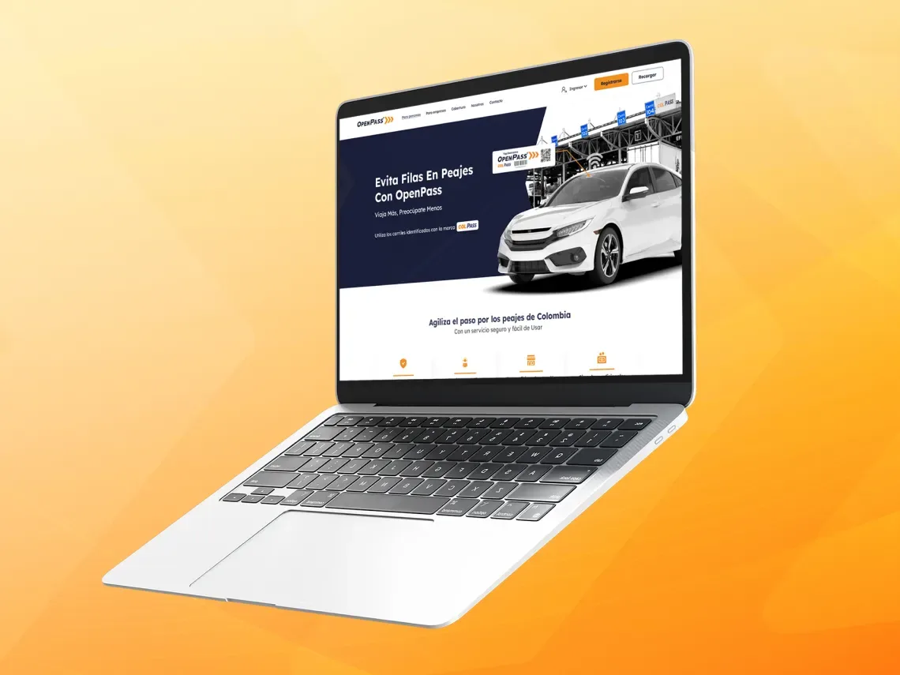
Acerca del proyecto
Rediseño del sitio web y la plataforma de OpenPass, una solución de telepeaje para agilizar el tránsito en carreteras.
• Cliente: OpenPass, telepeaje electrónico en Colombia
• Rol: Diseñador UX/UI · Estrategia SEO, flujos y sistema de diseño
• Reto: Usuarios particulares y empresas compartían un mismo flujo, lo que generaba fricción desde el primer clic.
• Decisión clave: Separar las experiencias B2C y B2B en rutas y landings independientes, sin romper la coherencia de marca.
• Entregable: Diseño del sitio web completo, con landings independientes para personas y empresas, y las pantallas de la plataforma de recargas y gestión del TAG.
Paso 1: El punto de partida (estado anterior)
Al auditar el sitio original, detecté que la propuesta de valor se perdía en un diseño anticuado. Los usuarios particulares se confundían con opciones corporativas, lo que generaba fricción en el registro y en la gestión del saldo.
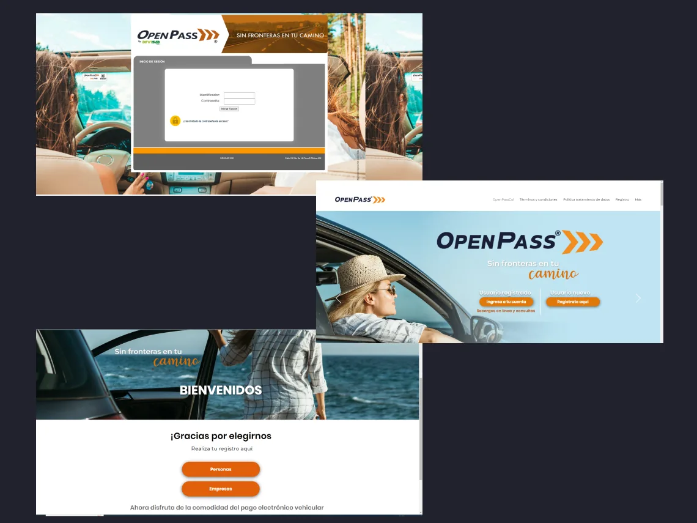
Paso 2: Estrategia de público y SEO (keywords)
Antes de diseñar, establecimos una base sólida de contenido. Analicé palabras clave para asegurar que OpenPass fuera una de las primeras opciones cuando alguien buscara "peaje electrónico". Estructuré la jerarquía de encabezados (h1, h2) priorizando términos de búsqueda estratégicos y creando landing pages independientes para cada nicho de mercado.
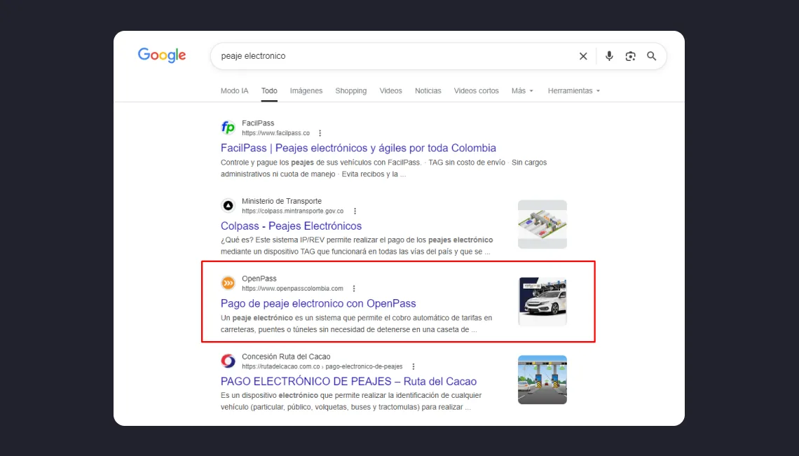
Paso 3: Arquitectura de información y flujos
Para reestructurar el ecosistema digital, definí una nueva arquitectura de información mediante un Sitemap que separó claramente las rutas para personas y empresas.
Esta base me permitió desarrollar wireframes iterativos y, posteriormente, un User Flow estratégico que se convirtió en la pieza clave del proyecto; este flujo no solo optimizó la navegación, sino que facilitó que los stakeholders comprendieran visualmente cómo se reconstruía la experiencia de usuario, validando cada punto de contacto desde el registro hasta la recarga del TAG antes de pasar a la fase de alta fidelidad.
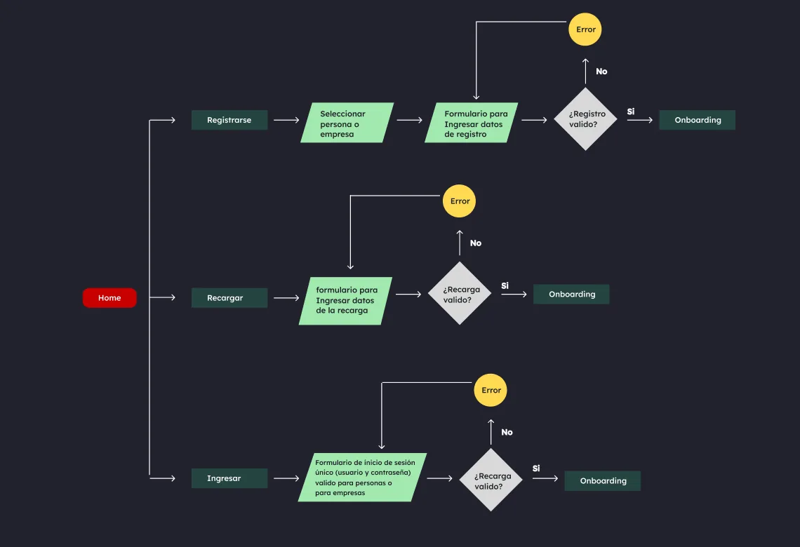
Paso 4: Sistema de diseño y landings por audiencia
Con la estructura validada, creé un Design System bajo la metodología de diseño atómico. Esto me permitió mantener la consistencia visual y acelerar el proceso de diseño de las dos landing pages.
• Escalabilidad: Definí un sistema de componentes reutilizables (botones, tarjetas, tipografía) que facilita la transición hacia el desarrollo.
• Identidad por segmento: Personalicé la experiencia mediante el uso estratégico de hero images y copy orientado a beneficios. Esto permite que tanto personas como empresas identifiquen su solución al instante sin romper la arquitectura global.
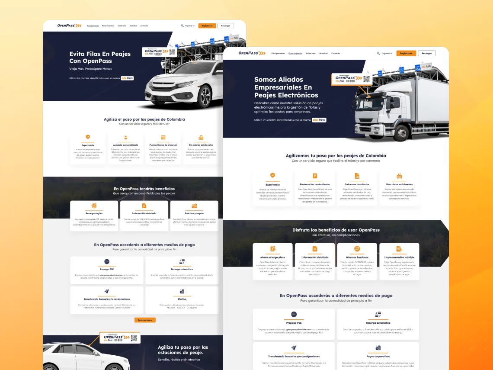
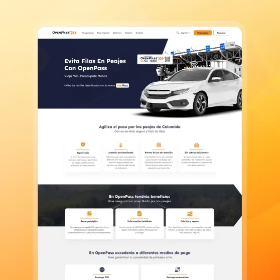
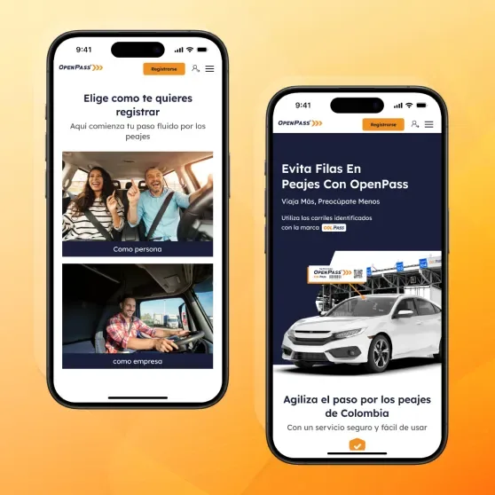
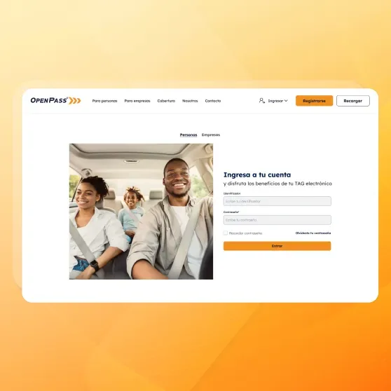
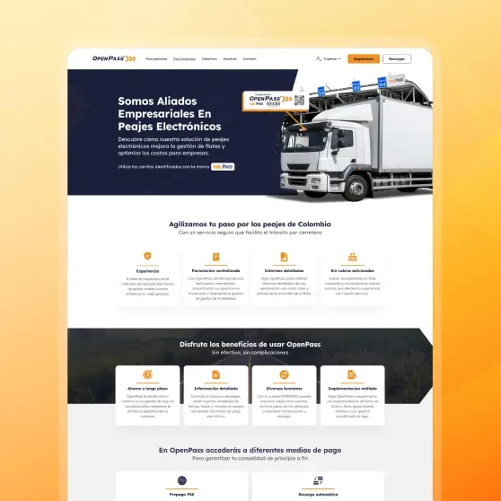
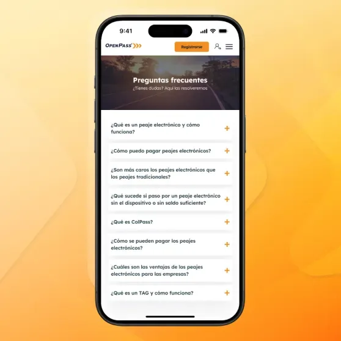
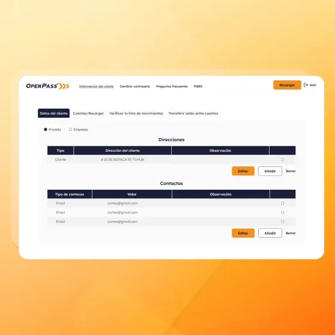
Paso 5: Prototipo de alta fidelidad
El resultado final es un ecosistema digital que transforma la complejidad técnica en una experiencia visualmente limpia y altamente funcional.
• Segmentación estratégica: Consolidé el rediseño mediante la creación de landing pages independientes para personas y empresas. Esto permitió personalizar la propuesta de valor para cada nicho, eliminando ruidos visuales y guiando a cada perfil hacia su embudo de conversión específico.
• Navegación global optimizada: Reestructuré el menú principal para que las acciones principales —Recargar, Ingresar y Registrarse— fueran accesibles. Esta claridad en la navegación global permite que tanto el usuario nuevo como el recurrente puedan gestionar su TAG con agilidad.
Impacto: una marca clara para personas y empresas
OpenPass pasó de una plataforma que confundía a sus clientes a un ecosistema digital pensado para cada perfil, con una base sólida para crecer:
• Visible donde se busca: La estrategia de keywords y la jerarquía de encabezados llevaron a OpenPass al top 3 de Google para "peaje electrónico".
• Decisiones alineadas desde el inicio: El user flow permitió que los stakeholders validaran la nueva experiencia antes de la alta fidelidad, para que diseño y desarrollo avanzaran sobre una base aprobada.
• Confianza para transaccionar: Una imagen profesional y tecnológica que da seguridad al recargar y administrar el TAG, algo clave en un servicio que maneja dinero.
Trabajo realizado para AMD Agencia de Marketing Digital